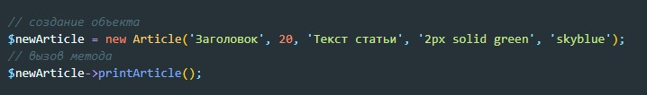

Классы в php - это инструции на основании которых строятся новые объекты (экземпляры класса).
Для согдания клааса указывается ключевое слово class, затем с большой буквы указывается название класса. В фигурных скобках помещается тело класса
Создание объекта на основании класса выглядит вот так:

Класс может иметь свои свойства и методы

Что бы вызвать метод объекта, который был создан на основании класса, используем вот такую конструкцию:

Пример обращения к свойствам класса внутри метода этого же класса (обязательны фигурные скобки, напоминает ${} в JS, т.е внутри скобок можно выполнять скрипты)

Конструктор - это метод класса который позволяет преопределить у создаваемого объекта значения его свойств
Вот как теперь будет выглядеть наш класс с конструктором
А создание объекта теперь будет выглядеть так:
Для указания значений свойств по умолчанию, необходимо эти свойства перенести в конец списка
Допустим, что у нас есть какой-то родительский класс
Что бы создать дочерний класс, который будет наследовать свойства и методы родительского класса, используется ключевое слово extends
Что бы создать конструктор у дочернего класса, который бы наследовал конструктор родителя используется ключевое слово parent
Вот так теперь выглядит добавление нового свойства у конструктора дочернего класса
Метод вывода информации на экран у дочернего класса нужно теперь переопределить с учетом нового свойства
У каждого дочернего класса может быть свой метод getTitle и каждый раз он будет отличаться от метода родителя, хотя будет иметь такое же название. Такое явление называется ПОЛИМОРФИЗМ в ООП
Если перед словом class родительского класса указать ключевое слово abstract - то этот класс станет абстрактным и это значит, что мы можем его использовать только как родительский класс для дочерних классов, иными словами мы не сможем создавать с его помощью объекты, мы сможем создавать с его помощью ТОЛЬКО дочерние классы
Обратный результат имеет ключевое слово final, т.е. наследоваться нельзя, а создавать объекты можно
В случае обращения к несуществующим свойствам и методам класса будет возникать фатальная ошибка. Что бы обезопасить себя от падения скрипта, можно использовать магические методы
Метод __get( ) - будет вызван при обращении к приватному свойству или к свойству которого по факту нет
Метод __set( ) - будет вызван когда мы пытаемся присвоить новое значение свойству которое не найдено или приватное
Метод __call( ) - будет вызван в случае вызова приватного или несуществующего метода

Этот метод будет вызван когда мы попытаемся с помощью echo вывести на экран объект